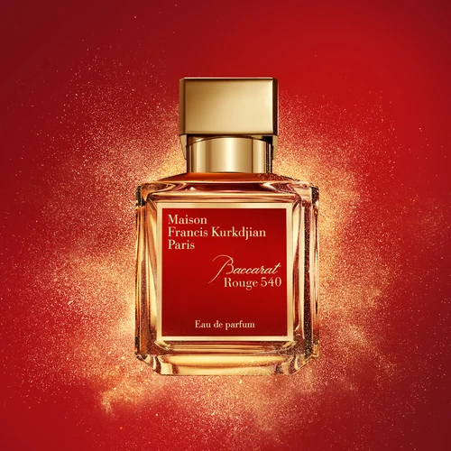

Product Landing
Featured Fragrance: Baccarat Rouge 540
For this product landing page, I am showcasing Baccarat Rouge 540 Eau de Parfum by Maison Francis Kurkdjian. It has floral, amber, and woody scents, with jasmine and saffron adding to its character.

Features
- Woody, ambery, and floral scent
- Jasmine and saffron notes
- Amber and dry woody character
- Slightly sweet gourmand touch
Details
Baccarat Rouge 540 grew out of a collaboration between Maison Francis Kurkdjian and Baccarat for Baccarat's 250th anniversary. Its scent combines jasmine and saffron with an ambergris-style accord, dry woods, and a sweet gourmand touch.
Get Updates
This form is a demo. Your email is not saved or sent to a service.